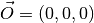
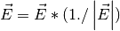

IntegrateEllipsoidsTwoStep dialog.
Table of Contents
| Name | Direction | Type | Default | Description |
|---|---|---|---|---|
| InputWorkspace | Input | MatrixWorkspace | Mandatory | An input MatrixWorkspace with time-of-flight units along X-axis and defined instrument with defined sample |
| PeaksWorkspace | InOut | PeaksWorkspace | Mandatory | Workspace with peaks to be integrated |
| RegionRadius | Input | number | 0.35 | Only events at most this distance from a peak will be considered when integrating |
| SpecifySize | Input | boolean | False | If true, use the following for the major axis sizes, else use 3-sigma |
| PeakSize | Input | number | 0.18 | Half-length of major axis for peak ellipsoid |
| BackgroundInnerSize | Input | number | 0.18 | Half-length of major axis for inner ellipsoidal surface of background region |
| BackgroundOuterSize | Input | number | 0.23 | Half-length of major axis for outer ellipsoidal surface of background region |
| IntegrateInHKL | Input | boolean | False | If true, integrate in HKL space not Q space. |
| IntegrateIfOnEdge | Input | boolean | True | Set to false to not integrate if peak radius is off edge of detector.Background will be scaled if background radius is off edge. |
| AdaptiveQBackground | Input | boolean | False | Default is false. If true, BackgroundOuterRadius + AdaptiveQMultiplier * |Q| and BackgroundInnerRadius + AdaptiveQMultiplier * |Q| |
| AdaptiveQMultiplier | Input | number | 0 | PeakRadius + AdaptiveQMultiplier * |Q| so each peak has a different integration radius. Q includes the 2*pi factor. |
| WeakPeakThreshold | Input | number | 1 | Intensity threshold use to classify a peak as weak. |
| UseOnePercentBackgroundCorrection | Input | boolean | True | If this options is enabled, then the the top 1% of the background will be removedbefore the background subtraction. |
| OutputWorkspace | Output | PeaksWorkspace | Mandatory | The output PeaksWorkspace will be a copy of the input PeaksWorkspace with the peaks’ integrated intensities. |
This algorithm will integrate disjoint single crystal Bragg peaks by summing the number of raw or weighted events in a 3D ellipsoidal peak region in reciprocal space (See IntegrateInHKL option for integrating in HKL) and subtracting an estimate of the background obtained from an ellipsoidal shell. In some ways it is similar to the IntegratePeaksMD v2 algorithm. In particular the size parameters to this algorithm are also specified in inverse Angstroms and the background subtraction is done in the same way for both the intensity and the estimated standard deviations. However, this algorithm differs from IntegratePeaksMD v2 in several critical ways.
This algorithm is very similar to the IntegrateEllipsoids v1 algorithm. But differs in how it treats weak peaks. Whether a peaks is classified as weak or strong is based on computing a rough estimate for the signal to noise ratio for each peak. The WeakPeakThreshold parameter is used to control this threshold.
For strong peaks the algorithm calculates the three principal axes of the events near a peak, and uses the standard deviations in the directions of the principal axes to determine the aspect ratio of ellipsoids used for the peak and background regions. This is identical to the method used in IntegrateEllipsoids v1.
For weak peaks the nearest strong peak is found and the ellipsoid used to integrate the strong peak is used instead. After the integration has been performed the calculated intensity is modified by a fraction of a standard unit contour computed for the strong peak.
The method is based on the ILL program Racer and the following paper:
- Wilkinson, C., et al. “Integration of single-crystal reflections using area multidetectors.” Journal of Applied Crystallography 21.5 (1988): 471-478.

IntegrateEllipsoidsTwoStep algorithm regions map.
 and
and

This algorithm will integrate a list of indexed single-crystal diffraction peaks
from a PeaksWorkspace, using events from an ( EventWorkspace ). The indexed peaks are first used to determine a UB matrix.
The inverse of that UB matrix is then used to form lists of events that are
close to peaks in reciprocal space. An event will be added to the list of events
for a peak provided that the fractional  value of that event
(obtained by applying UB-inverse to the
value of that event
(obtained by applying UB-inverse to the  -vector) is closer to the
of that peak, than to the of any other peak AND the
-vector for that event is within the specified radius of the
-vector for that peak. This technique makes the algorithm suitable for nuclear
peaks, but may not be suitable for magnetic peaks.
-vector) is closer to the
of that peak, than to the of any other peak AND the
-vector for that event is within the specified radius of the
-vector for that peak. This technique makes the algorithm suitable for nuclear
peaks, but may not be suitable for magnetic peaks.
When the lists of events near the peaks have been built, the algorithm will estimate the signal to noise ratio for each peak using the parameters provided. The WeakPeakThreshold parameter will be used to threshold which peaks are classed as strong as which are weak.
Strong peaks will then be integrated. The three principal axes of the set of events near each peak are found, and the standard deviations of the projections of the events on each of the three principal axes are calculated. The principal axes and standard deviations for the events around a peak in the directions of the principal axes are used to determine an ellipsoidal region for the peak and an ellipsoidal shell region for the background. The number of events in the peak ellipsoid and background ellipsoidal shell are counted and used to determine the net integrated intensity of the peak.
The ellipsoidal regions used for the peak and background can be obtained in two ways. First, the user may specify the size of the peak ellipsoid and the inner and outer size of the background ellipsoid. If these are specified, the values will be used for half the length of the major axis of an ellipsoid centered on the peak. The major axis is in the direction of the principal axis for which the standard deviation in that direction is largest. The other two axes for the ellipsoid are in the direction of the other two principal axes and are scaled relative to the major axes in proportion to their standard deviations. For example if the standard deviations in the direction of the other two principal axes are .8 and .7 times the standard deviation in the direction of the major axis, then the ellipse will extend only .8 and .7 times as far in the direction of those axes, as in the direction of the major axis. Overall, the user specified sizes for the PeakSize, BackgroundInnerSize and BackgroundOuterSize are similar to the PeakRadius, BackgroundInnerRadius and BackgrounOuterRadius for the IntegratePeaksMD v2 algorithm. The difference is that the regions used in this algorithm are not spherical, but are ellipsoidal with axis directions obtained from the principal axes of the events near a peak and the ellipsoid shape (relative axis lengths) is determined by the standard deviations in the directions of the principal axes.
Second, if the user does not specify the size of the peak and background ellipsoids, then the three axes of the peak ellipsoid are again set to the principal axes of the set of nearby events but in this case their axis lengths are set to cover a range of plus or minus three standard deviations in the axis directions. In this case, the background ellipsoidal shell is chosen to have the same volume as the peak ellipsoid and it’s inner surface is the outer surface of the peak ellipsoid. The outer surface of the background ellipsoidal shell is an ellipsoidal surface with the same relative axis lengths as the inner surface.
This algorithm uses principle component analysis to determine the principle axis for each peak. For the event list (QLab) associated with each peak, the algorithm determines a covariance matrix, and uses that to establish eigenvectors corresponding to the principle axis (all orthogonal). The sizes of each principle axis are used define the region of which events will be counted/integrated from those already associated with each peak.
Once strong peaks have been integrated the algorithm uses the parameters derived from there integration to integrate the remaining weak peaks. For each weak peak the nearest strong peak is found using a nearest neighbour search. The shape and principal components of the strong peak are then used to integrate the weak peak in the same was as described for strong peaks above. A weight determined by the fraction of a unit contour contained within the total integration contour of the strong peak is used to weight the integrated intensity for the weak peak.
Edges for each bank or pack of tubes of the instrument are defined by masking the edges in the PeaksWorkspace instrument. e.g. For CORELLI, tubes 1 and 16, and pixels 0 and 255. Q in the lab frame for every peak is calculated, call it C For every point on the edge, the trajectory in reciprocal space is a straight line, going through:

Calculate a point at a fixed momentum, say k=1. Q in the lab frame:

Normalize E to 1:

The distance from C to OE is given by:

If:

for the integration, one of the detector trajectories on the edge is too close to the peak This method is also applied to all masked pixels. If there are masked pixels trajectories inside an integration volume, the peak must be rejected. If there are masked pixel trajectories inside the background volume, the background events are scaled by estimating the volume of the ellipsoid on the detector.
The sigma from the background could be too small because the background contains events from other peaks. In an effort to reduce this, all the background events are sorted and the top 1% are removed. Note that this behaviour is optional and can be enabled if the property UseOnePercentBackgroundCorrection is enabled. It is enabled by default.
Example - IntegrateEllipsoids:
User should provide their own event nexus file instead of TOPAZ_3132_event.nxs used within this example. The original TOPAZ_3132_event.nxs file is available in Mantid system tests repository.
1 2 3 4 5 6 7 8 9 10 11 12 13 14 15 16 17 18 19 20 21 22 23 24 25 26 27 28 29 30 31 32 33 34 35 36 37 38 | def print_tableWS(pTWS,nRows):
''' Method to print part of the table workspace '''
tab_names=pTWS.keys()
row = ""
for name in tab_names:
if len(name)>8:
name= name[:8]
row += "| {:8} ".format(name)
print(row + "|")
for i in range(nRows):
row = ""
for name in tab_names:
col = pTWS.column(name);
data2pr=col[i]
if type(data2pr) is float:
row += "| {:8.1f} ".format(data2pr)
else:
row += "| {:8} ".format(str(data2pr))
print(row + "|")
# load test workspace
Load(Filename=r'TOPAZ_3132_event.nxs',OutputWorkspace='TOPAZ_3132_event',LoadMonitors='1')
# build peak workspace necessary for IntegrateEllipsoids algorithm to work
ConvertToMD(InputWorkspace='TOPAZ_3132_event',QDimensions='Q3D',dEAnalysisMode='Elastic',Q3DFrames='Q_sample',LorentzCorrection='1',OutputWorkspace='TOPAZ_3132_md',\
MinValues='-25,-25,-25',MaxValues='25,25,25',SplitInto='2',SplitThreshold='50',MaxRecursionDepth='13',MinRecursionDepth='7')
FindPeaksMD(InputWorkspace='TOPAZ_3132_md',PeakDistanceThreshold='0.3768',MaxPeaks='50',DensityThresholdFactor='100',OutputWorkspace='TOPAZ_3132_peaks')
FindUBUsingFFT(PeaksWorkspace='TOPAZ_3132_peaks',MinD='3',MaxD='15',Tolerance='0.12')
IndexPeaks(PeaksWorkspace='TOPAZ_3132_peaks',Tolerance='0.12')
# integrate ellipsoids
result=IntegrateEllipsoidsTwoStep(InputWorkspace='TOPAZ_3132_event',PeaksWorkspace='TOPAZ_3132_peaks',\
RegionRadius='0.25',PeakSize='0.2',BackgroundInnerSize='0.2',BackgroundOuterSize='0.25',OutputWorkspace='TOPAZ_3132_peaks')
# print 10 rows of resulting table workspace
print_tableWS(result,10)
|
Output:
1 2 3 4 5 6 7 8 9 10 11 | | RunNumbe | DetID | h | k | l | Waveleng | Energy | TOF | DSpacing | Intens | SigInt | BinCount | BankName | Row | Col | QLab | QSample | PeakNumb |
| 3132 | 1124984 | -2.0 | -1.0 | 2.0 | 3.1 | 8.5 | 14482.3 | 2.0 | 120486.0 | 375.8 | 1668.0 | bank17 | 120.0 | 42.0 | [1.57771,1.21779,2.37854] | [2.99396,0.815958,0.00317344] | 1 |
| 3132 | 1156753 | -3.0 | -2.0 | 3.0 | 2.1 | 18.8 | 9725.7 | 1.3 | 149543.0 | 393.0 | 1060.0 | bank17 | 145.0 | 166.0 | [2.48964,1.45725,3.88666] | [4.52618,1.71025,0.129461] | 2 |
| 3132 | 1141777 | -4.0 | -2.0 | 3.0 | 1.7 | 28.1 | 7963.2 | 1.0 | 8744.0 | 106.3 | 96.0 | bank17 | 17.0 | 108.0 | [2.60836,2.31423,4.86391] | [5.69122,1.79492,-0.452799] | 3 |
| 3132 | 1125241 | -4.0 | -2.0 | 4.0 | 1.6 | 33.9 | 7252.2 | 1.0 | 19740.0 | 146.2 | 83.0 | bank17 | 121.0 | 43.0 | [3.15504,2.42573,4.75121] | [5.97829,1.63473,0.0118744] | 4 |
| 3132 | 1170598 | -4.0 | -3.0 | 4.0 | 1.5 | 34.1 | 7224.6 | 0.9 | 15914.0 | 131.4 | 73.0 | bank17 | 166.0 | 220.0 | [3.43363,1.70178,5.39301] | [6.07726,2.59962,0.281759] | 5 |
| 3132 | 1214951 | -2.0 | -1.0 | 4.0 | 1.9 | 22.8 | 8839.5 | 1.7 | 121852.0 | 352.9 | 719.0 | bank18 | 231.0 | 137.0 | [2.73683,1.43808,2.11574] | [3.5786,0.470838,1.00329] | 6 |
| 3132 | 1207827 | -3.0 | -1.0 | 4.0 | 1.7 | 27.9 | 7991.7 | 1.3 | 64593.0 | 257.7 | 447.0 | bank18 | 19.0 | 110.0 | [2.80324,2.29519,3.09134] | [4.71517,0.554412,0.37714] | 7 |
| 3132 | 1232949 | -4.0 | -2.0 | 6.0 | 1.2 | 53.3 | 5782.1 | 0.9 | 18247.0 | 139.3 | 45.0 | bank18 | 53.0 | 208.0 | [4.29033,2.63319,4.46168] | [6.52658,1.27985,1.00646] | 8 |
| 3132 | 1189484 | -4.0 | -1.0 | 6.0 | 1.1 | 63.4 | 5299.3 | 1.0 | 13512.0 | 120.7 | 31.0 | bank18 | 108.0 | 38.0 | [4.02414,3.39659,3.83664] | [6.4679,0.298896,0.726133] | 9 |
| 3132 | 1218337 | -5.0 | -2.0 | 7.0 | 1.0 | 79.8 | 4724.1 | 0.8 | 7411.0 | 88.3 | 15.0 | bank18 | 33.0 | 151.0 | [4.96622,3.61607,5.32554] | [7.99244,1.19363,0.892655] | 10 |
|
Categories: AlgorithmIndex | Crystal\Integration
C++ source: IntegrateEllipsoidsTwoStep.cpp (last modified: 2019-06-05)
C++ header: IntegrateEllipsoidsTwoStep.h (last modified: 2018-10-05)